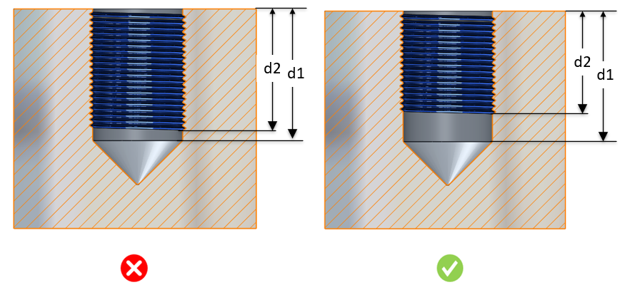

本ルールは、CADモデル上に存在する実際のねじ穴を識別し、ねじ深さと下穴深さの比率＜d2/d1＞を、構成で設定された値と照合して検証します。
完全なねじ深さを加工するには、部分的なねじよりも大きなトルクが必要です。一般的な指針では、下穴深さに対してねじ深さが75％であれば、十分なねじ強度が得られるとされています。このねじ加工範囲では、同等の強度を得るために必要なトルクは75％程度で済みます。適切なねじ深さを設定することで、加工時間を短縮し、工具寿命を延ばし、工具破損の問題を回避できます。
部品の機能上の実際の要件に基づき、設計者は深いねじ加工が必要かどうかを判断する必要があります。不必要に深いねじを追加すると、加工時間が増加します。下穴深さに対して75％のねじ深さは、十分な強度を提供します。
DFMProでは、ねじ深さと下穴深さの許容比率＜d2/d1＞を設定できます。

d1 = 下穴深さ
d2 = ねじ深さ